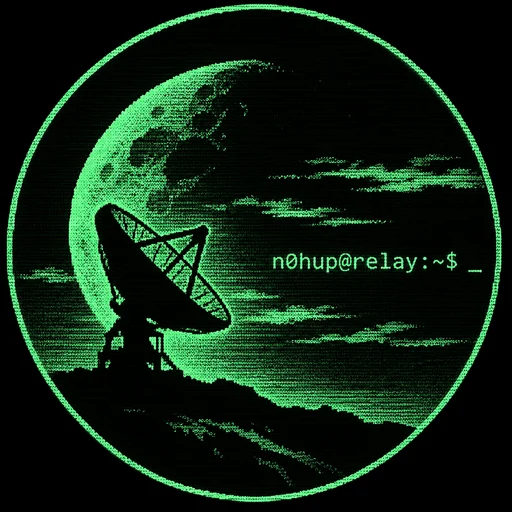

n0hup@relay:~$ cat mission
Keep critical infrastructure running when the connection drops
Active Directory, Microsoft 365, Unix/Linux and disaster recovery engineering, from people who ran IT for a remote oil field where downtime was not an option.

Start here
Fixed price: AD Health Check
Read-only review of your Active Directory. Report and review call in 5 business days. No credentials leave your network.
€500
[[ SEE WHAT’S INCLUDED ]]Engineering services
Infrastructure, Unix/Linux hardening, Microsoft 365, backup readiness and disaster recovery, scoped after discovery.
[[ ENGINEERING SERVICES ]]Tailored tools
PowerShell, Python and Bash automation, reports and integrations built around your environment.
[[ TAILORED SOLUTIONS ]]Proven where it is hard
From 2019 to 2024 RELAY’s principal engineer led IT & telecommunications for a major upstream oil field in the Middle East, then carried IT continuity through a change of field operator.
99%
SLA performance sustained
−40%
downtime
−25%
user complaints
Free tool: AD Health Toolkit
RELAY AD Health Toolkit v0.1, Community Edition. Read-only observations for on-premises Active Directory across ten diagnostic areas, with local HTML/CSV reports. Free under the MIT licence.
[[ EXPLORE THE TOOLKIT ]] [[ VIEW SYNTHETIC DEMO ]]
Community preview. Target: Windows PowerShell 5.1 x64 + RSAT. Windows/AD lab validation is pending.
RELAY terminal
Browser simulation. No real shell commands are executed.
Identity
nohup keeps a process alive after the session ends. RELAY keeps a service alive after the connection drops. A digital identity rooted in the Unix tradition, early Internet culture and independent systems.
Continuity over visibility. Understanding over authority. Resilience over perfection. Precision over noise.
Contact
Email: n0hup.relay@gmail.com
Secure mail: n0hup@proton.me
Source: codeberg.org/n0hup
Keep passwords, tokens and confidential system details out of your first message.